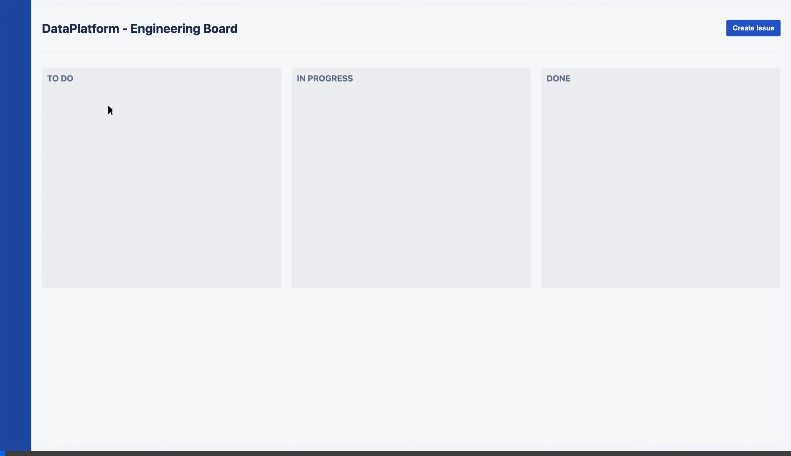
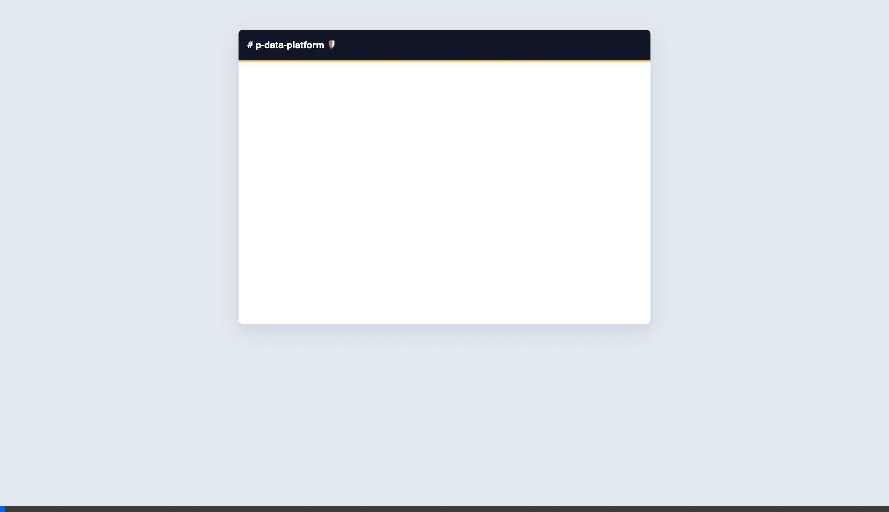

The Next Era of Data Engineering
(Manual Workflow)

Assigning tasks sequentially to specialized experts.
(Sequential Bottlenecks)

Steps cannot start until previous ones are completely finished, dragging delay.
Business intent gets misinterpreted during handoffs between technical roles.
Errors discovered at reporting force painful restarts from the beginning.
(Agentic AI Workflow)
The
Orchestrator instantly activates ALL specialized sub-agents,
creating a real-time autonomous neural
network.
(Parallel & Coordinated)
Agents automatically mock data allowing dependent modules to be built safely.
Machine-to-machine sync via structured payloads ensures no missed context.
Self-correcting feedback loops spot syntax or logic errors immediately.
Data Leaders shift from micro-managing tasks to providing strategic direction.
Time from business idea to production delivery shrinks from months to hours.
Code quality and accurate documentation are strictly guaranteed by constraints.